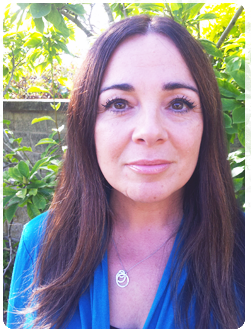

Sheffield based and client focused
Years of experience helping people overcome and manage their mental health problems and life challenges.
Years of experience helping people overcome and manage their mental health problems and life challenges.
We feel you have the right to meet your counsellor before, talk through what you would like help with, find out what training and experience your counsellor has and be provided with a transparent pricing plan tailored to your needs.
We offer consultations at a reduced rate at one of our counselling locations, to give you the chance to get to know your therapist and feel confident in your choice.
We feel that it's important for you to have a chance to talk with your potential therapist before making the decision to undertake any kind of therapy so you can get specialist advice around the problems you're facing, find out what kind of approaches the therapist would take and help you make an informed decision about how you wish to go forward.
This is why we offer one-off sessions at a rate of £60 for an extended hour and a half consultation, to allow ample time to begin to explore your issues and answer the questions you might have.
We are transparent about our fees, and will try to offer a fixed price agreement per session during our initial consultation. As part of our community ethos we currently offer two low-cost places to people who meet our selection process.
The cost per counselling session is usually £60.
We are also open to discussing corporate contracts where a retainer can be paid to keep counselling spaces open for your employees. Please contact Amanda for more details.
We want to make sure our counselling sessions are accessible, welcoming, and convenient.
We offer counselling and therapy in person, over the phone, or in online video calls. You can find the availability of different types of counselling sessions on my British Association for Counselling and Psychotherapy page.
I am a registered and fully accredited member of the British Association for Counselling and Psychotherapy (BACP) and have had extensive experience providing counselling services in both a private capacity and while working for a mental health charity and have helped clients facing a wide range of challenges in their life.
It is such an enormous step to take when recognising you may need counselling and it can seem a daunting task to find the right person to turn to. I aim to try to make this process as clear and accessible as I can. I believe that by building a foundation of warmth and trust, this therapeutic relationship we form, enables you to share your difficulties. My intention is that by offering an accepting, safe and containing environment for you, we can work towards positive outcomes and a sense of well being.
